Movement test
Rate in ± seconds per day, amplitude and beat error are measured on a timegrapher and compared with the maker’s tolerance.
Luxury Watch Collector & Horology Timepiece Showcase
Pre-owned Rolex, Omega, Tudor and Grand Seiko timepieces, each with a movement-condition dossier, box & papers provenance tags and a zoomable photo gallery.
Four checks sit behind each listing, so a collector can judge a watch without handling it.
Rate in ± seconds per day, amplitude and beat error are measured on a timegrapher and compared with the maker’s tolerance.
Case, bezel, dial and crystal are each scored out of 10, with written notes on polishing and wear.
Original box, stamped warranty card and archive extract are tagged Verified or Not available.
Front, macro, profile and caseback exhibition views, each viewable at up to 4× zoom.
Rolex
Ref. 16610 · 2006 · Cal. 3135
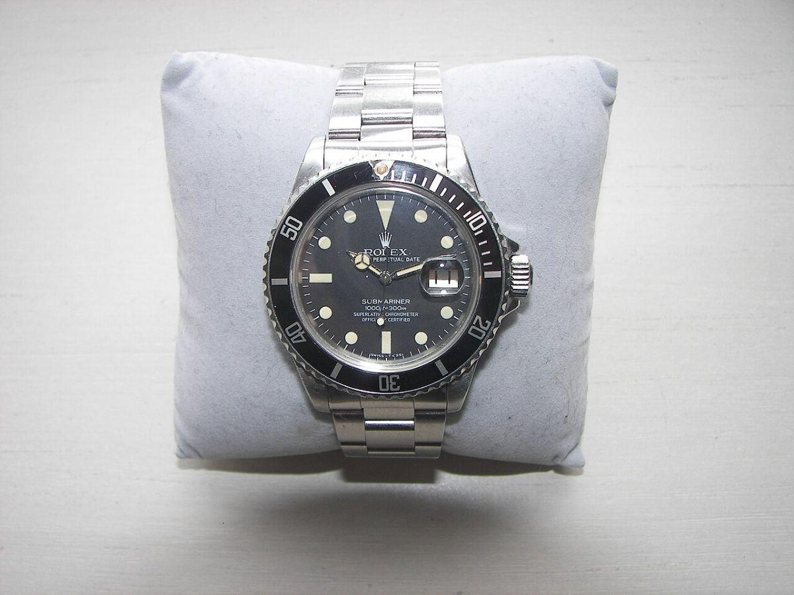
The benchmark dive watch: black dial, unidirectional bezel and a self-winding chronometer movement, shown on its presentation cushion.
9.0 / 10
Original bevels on the lugs; light hairlines on the clasp.
9.2 / 10
Aluminium insert even, pip intact, crisp 120-click action.
9.6 / 10
Original dial, even lume plots, no moisture marks.
9.3 / 10
Sapphire clear; cyclops correctly aligned over the date.
✔ Within the factory tolerance (-2 / +2 s per day)
Provenance verdict
Original box, stamped warranty card and archive extract confirm the serial.
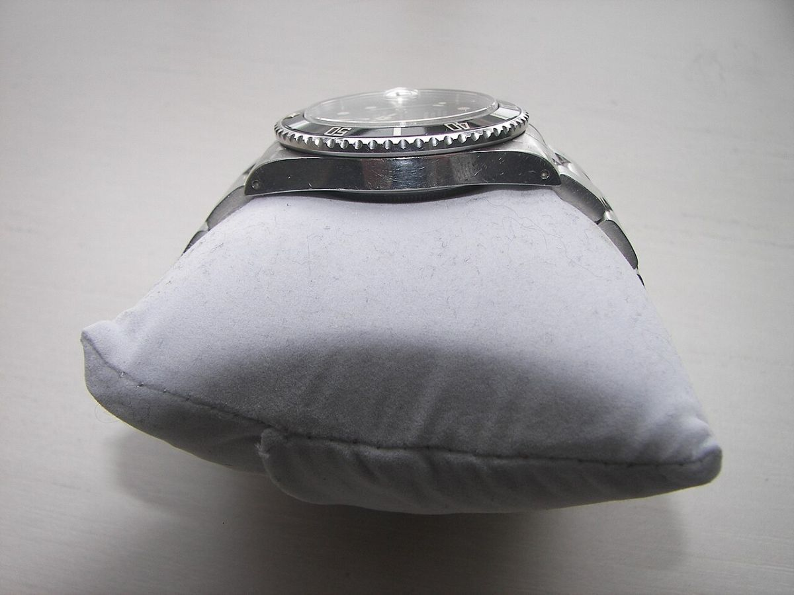
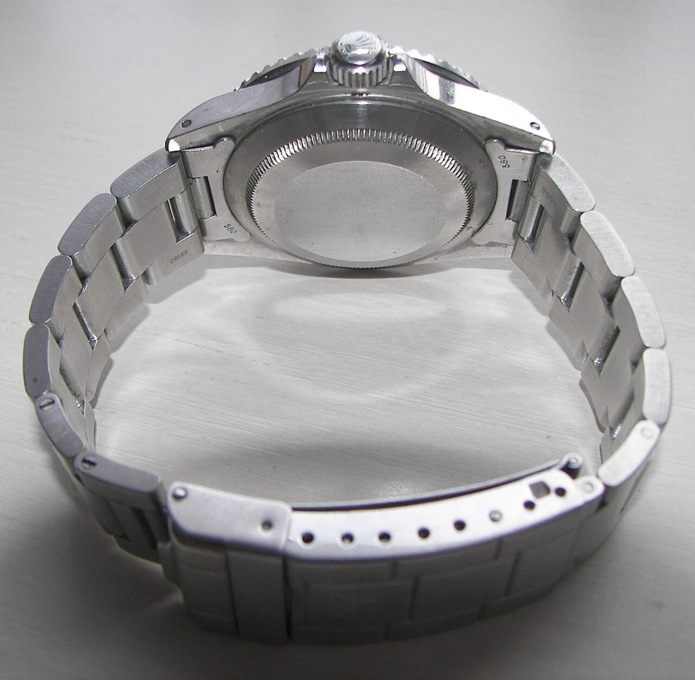
Rolex
Ref. 126710BLRO · 2019 · Cal. 3285
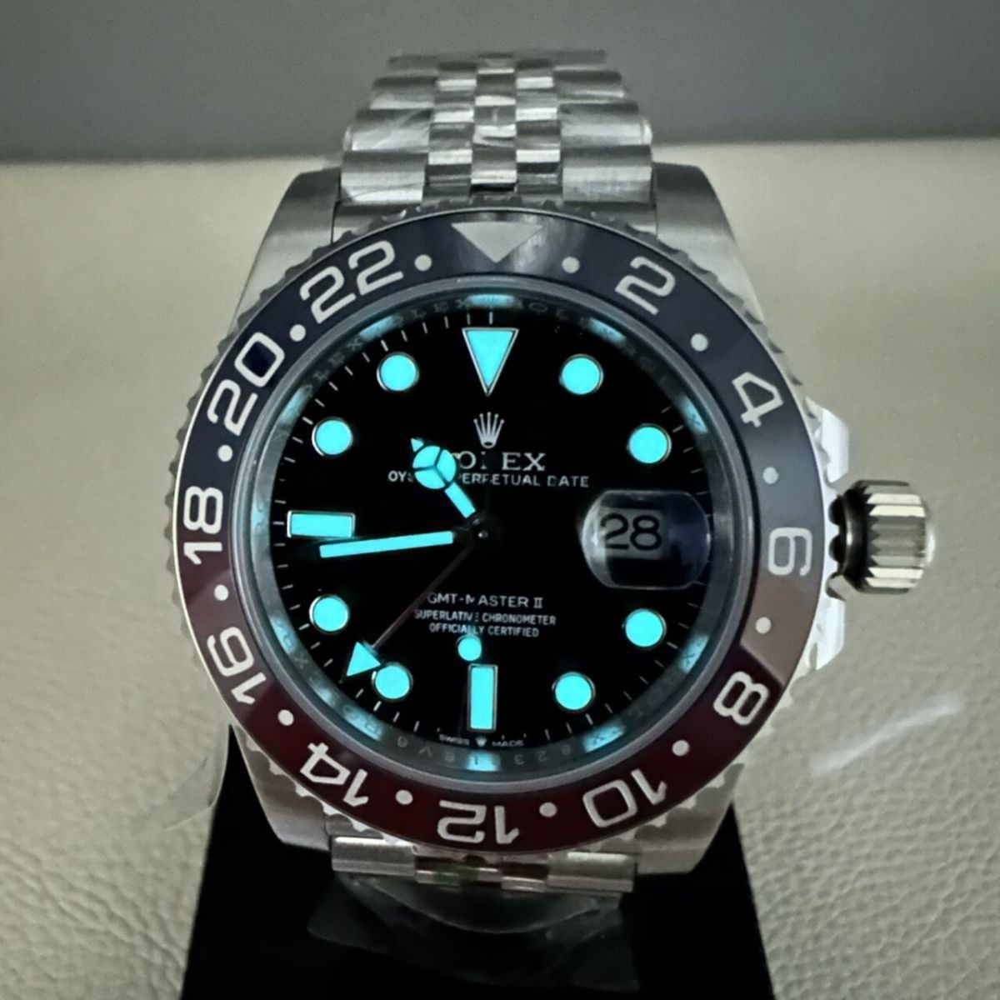
A dual-time travel watch with the red-and-blue ceramic 24-hour bezel, photographed here with its lume glowing.
9.5 / 10
Near-new flanks; factory brushing on the lugs.
9.7 / 10
Cerachrom insert unchipped, numerals fully filled.
9.8 / 10
Pristine black dial; GMT hand aligned to the hour.
9.6 / 10
Flawless sapphire crystal.
✔ Within the factory tolerance (-2 / +2 s per day)
Provenance verdict
Complete presentation set with travel pouch.
This seller has not uploaded caseback or movement photos yet. Ask for them before you buy: the movement should match calibre 3285.
Rolex
Ref. 16710 · 2003 · Cal. 3186
The classic aluminium-bezel GMT-Master II, offered as a full set and photographed on its original green box.
8.8 / 10
Polished once at service; lugs still full.
8.9 / 10
Black aluminium insert with light, even fading.
9.4 / 10
Original dial with matching hands.
9.0 / 10
Sapphire with fine hairlines under strong light.
✔ Within the factory tolerance (-2 / +2 s per day)
Provenance verdict
Original green box shown in the photos, plus warranty papers.
This seller has not uploaded caseback or movement photos yet. Ask for them before you buy: the movement should match calibre 3186.
Rolex
Ref. 16013 · 1987 · Cal. 3035
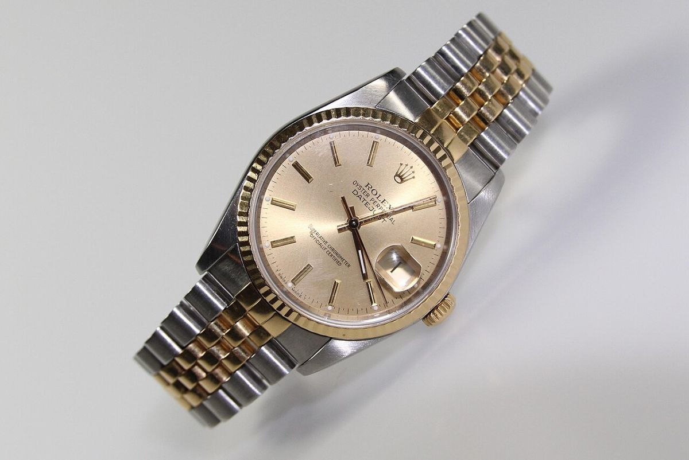
The classic dress-sports Rolex in steel and yellow gold, with a fluted bezel, champagne dial and Jubilee bracelet.
8.4 / 10
Normal wear for its age; one light polish.
8.8 / 10
Gold fluting slightly softened.
9.0 / 10
Champagne dial clean; applied markers aligned.
8.7 / 10
Hairlines visible at the edge of the crystal.
⚠ Outside the factory tolerance (-2 / +2 s per day)
Provenance verdict
Warranty papers only; the original box is missing.
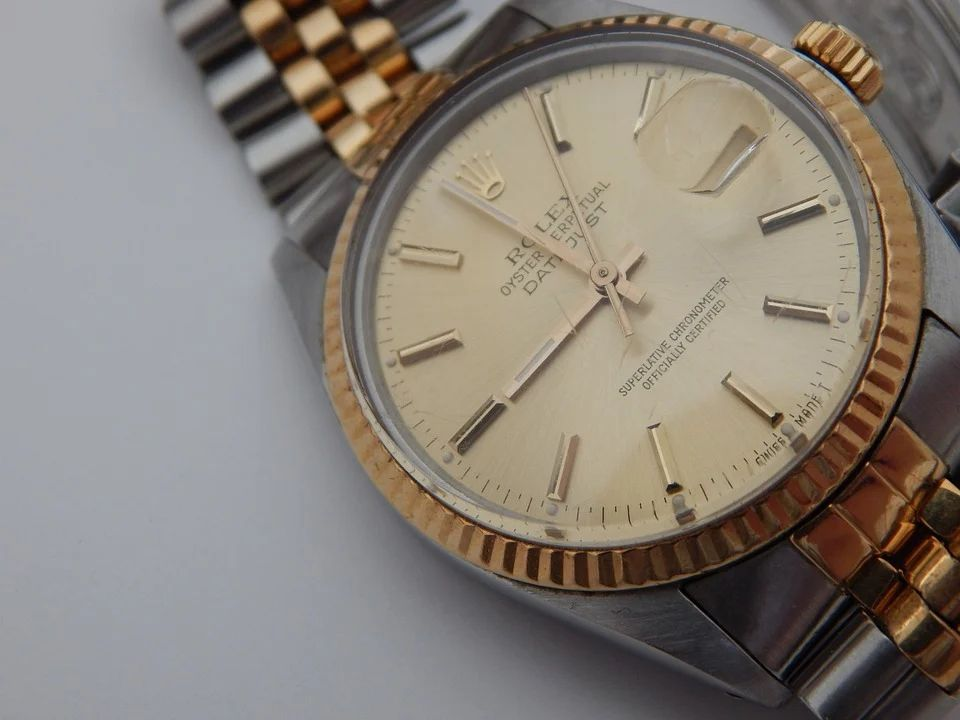
This seller has not uploaded caseback or movement photos yet. Ask for them before you buy: the movement should match calibre 3035.
Rolex
Ref. 16528 · 1996 · Cal. 4030
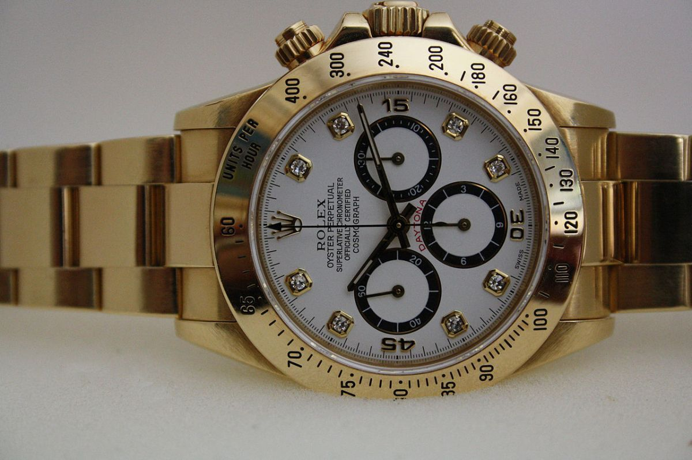
A solid yellow-gold chronograph with a white diamond-set dial, black registers and an engraved tachymeter bezel.
9.1 / 10
Gold shows soft edges; no dents.
9.3 / 10
Tachymeter scale crisp.
9.7 / 10
Diamond markers all present; registers clean.
9.4 / 10
Sapphire clear.
✔ Within the factory tolerance (-2 / +2 s per day)
Provenance verdict
Box and stamped papers; no archive extract on file.
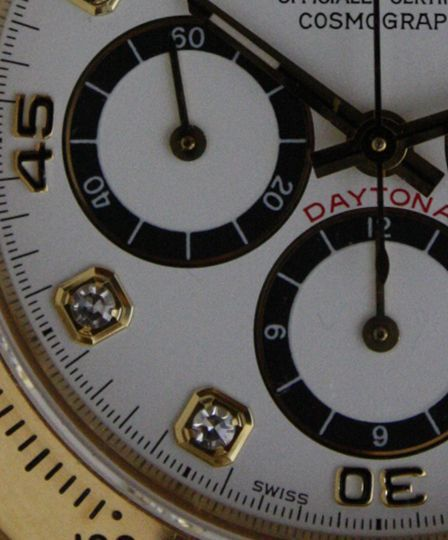
This seller has not uploaded caseback or movement photos yet. Ask for them before you buy: the movement should match calibre 4030.
Omega
Ref. 145.012 · 1968 · Cal. 321
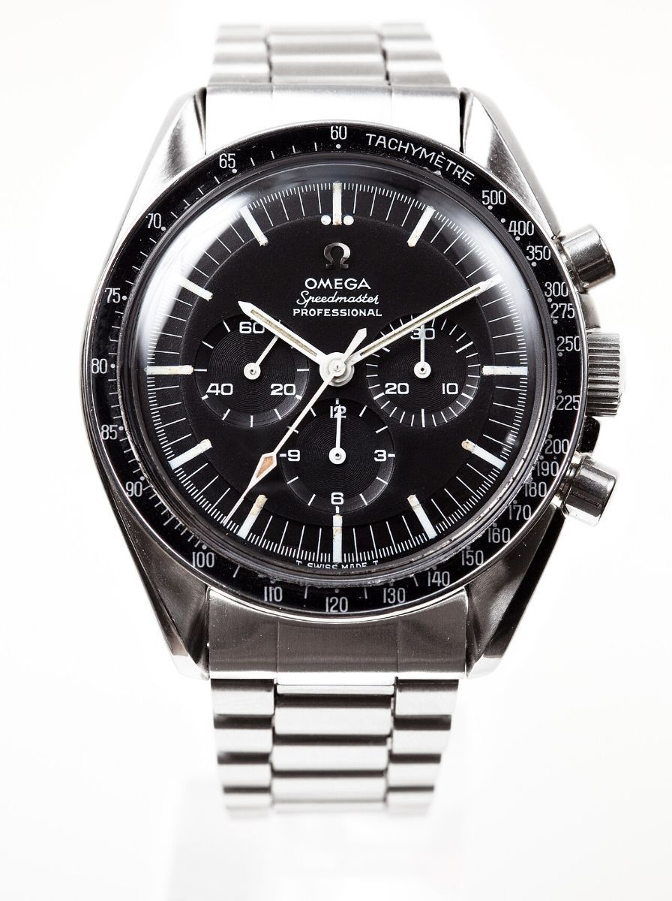
A vintage hand-wound Speedmaster with the legendary Calibre 321 column-wheel chronograph, shown through a display back.
8.6 / 10
Honest wear, unpolished lug tops.
8.9 / 10
Tachymeter bezel with light marks.
9.2 / 10
Step dial with even, aged lume.
8.5 / 10
Hesalite crystal with fine scratches.
✔ Within the factory tolerance (-1 / +11 s per day)
Provenance verdict
Omega extract of the archives only.
Omega
Ref. 210.20.42.20.04.001 · 2022 · Cal. 8800
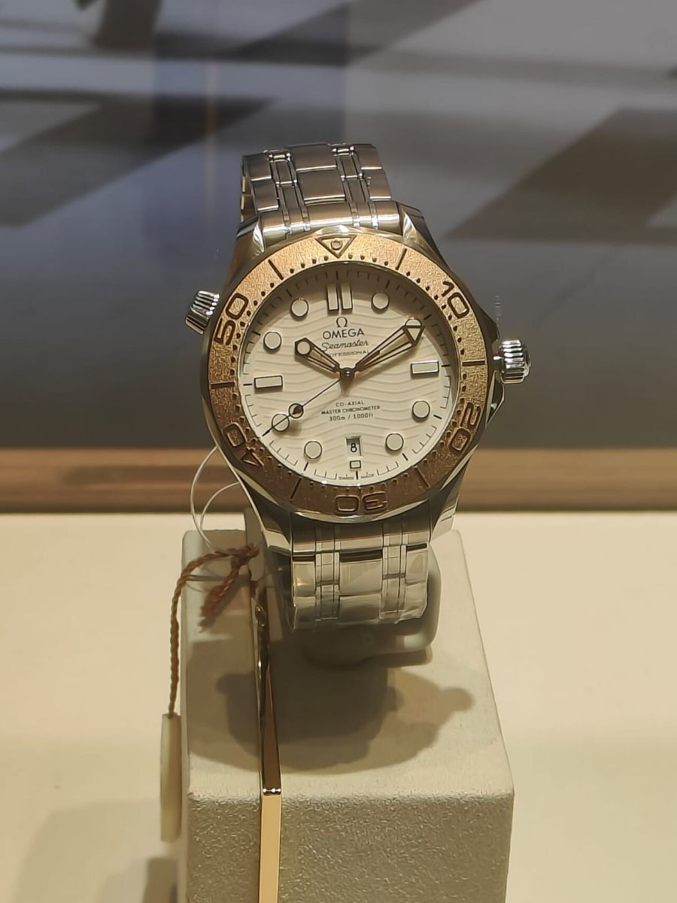
A Co-Axial Master Chronometer dive watch with a white wave-pattern dial and a gold diving bezel, shown in a boutique display.
9.6 / 10
Unworn display piece.
9.7 / 10
Gold bezel unmarked.
9.8 / 10
Laser-engraved wave dial flawless.
9.7 / 10
Sapphire clear.
✔ Within the factory tolerance (+0 / +5 s per day)
Provenance verdict
Full boutique set with hang tag.
This seller has not uploaded caseback or movement photos yet. Ask for them before you buy: the movement should match calibre 8800.
Omega
Ref. 2852 · 1958 · Cal. 505
A 1950s rose-gold chronometer dress watch on black leather, from Omega's flagship Constellation line.
8.2 / 10
Gold case softened by decades of wear.
8.5 / 10
Smooth bezel with light dings.
8.9 / 10
Original dial with gentle patina.
8.0 / 10
Acrylic crystal, polished.
⚠ Outside the factory tolerance (-5 / +5 s per day)
Provenance verdict
Watch only: no box or papers.
This seller has not uploaded caseback or movement photos yet. Ask for them before you buy: the movement should match calibre 505.
Tudor
Ref. 79350 · 2018 · Cal. MT5813
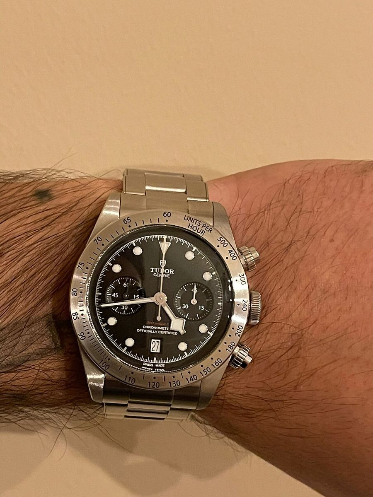
A sporty steel chronograph with a black dial, tachymeter bezel and 70-hour power reserve.
9.0 / 10
Light desk-diving marks on the clasp.
9.1 / 10
Steel tachymeter bezel clean.
9.5 / 10
Matte black dial, registers sharp.
9.2 / 10
Sapphire, one micro-mark at 4 o'clock.
✔ Within the factory tolerance (-2 / +4 s per day)
Provenance verdict
Box and stamped warranty card.
This seller has not uploaded caseback or movement photos yet. Ask for them before you buy: the movement should match calibre MT5813.
Tudor
Ref. 25600TB · 2021 · Cal. MT5612
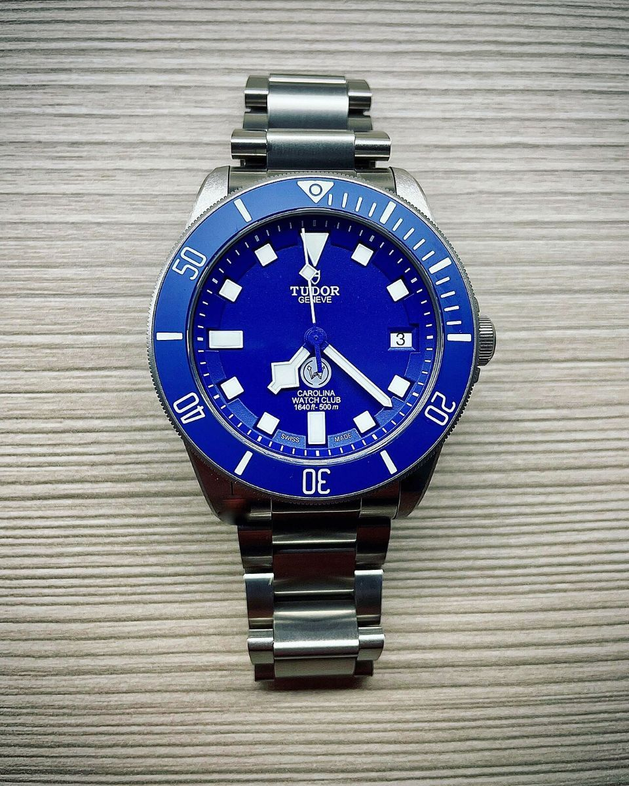
A lightweight titanium professional dive watch with a blue dial and ceramic bezel, in a limited edition for a watch club.
9.4 / 10
Bead-blasted titanium with no marks.
9.6 / 10
Ceramic insert pristine.
9.7 / 10
Blue dial without dust or marks.
9.5 / 10
Flat sapphire, clear.
✔ Within the factory tolerance (-2 / +4 s per day)
Provenance verdict
Box and warranty card.
This seller has not uploaded caseback or movement photos yet. Ask for them before you buy: the movement should match calibre MT5612.
Grand Seiko
Ref. SBGA011 · 2012 · Cal. 9R65
A Spring Drive icon with a textured white dial, a gliding seconds hand and a Zaratsu-polished titanium case.
9.3 / 10
Mirror-polished surfaces sharp.
9.5 / 10
Thin polished bezel, no marks.
9.9 / 10
Snowflake texture uniform.
9.6 / 10
Dual-curved sapphire with coating intact.
✔ Within the factory tolerance (-1 / +1 s per day)
Spring Drive movements are regulated by a glide wheel, so there is no balance amplitude or beat error to measure.
Provenance verdict
Box, warranty and Spring Drive certificate.
This seller has not uploaded caseback or movement photos yet. Ask for them before you buy: the movement should match calibre 9R65.
Grand Seiko
Ref. SBGW231 · 2020 · Cal. 9S64
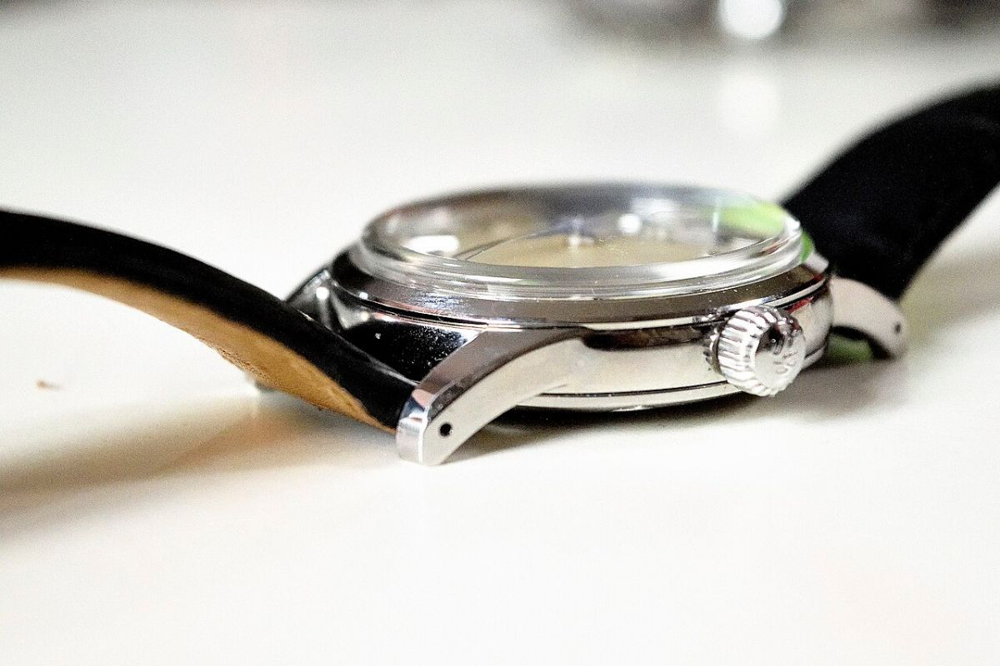
A compact, time-only hand-wound dress watch; its 9S64 movement can be admired through the sapphire caseback.
9.4 / 10
Faceted lugs and polish intact.
9.5 / 10
Slim bezel, no dings.
9.6 / 10
Cream dial even; markers aligned.
9.4 / 10
Box-style sapphire, edges clear.
✔ Within the factory tolerance (-3 / +5 s per day)
Provenance verdict
Box, warranty card and movement certificate.
Secure checkout


.jpg){kind=link}